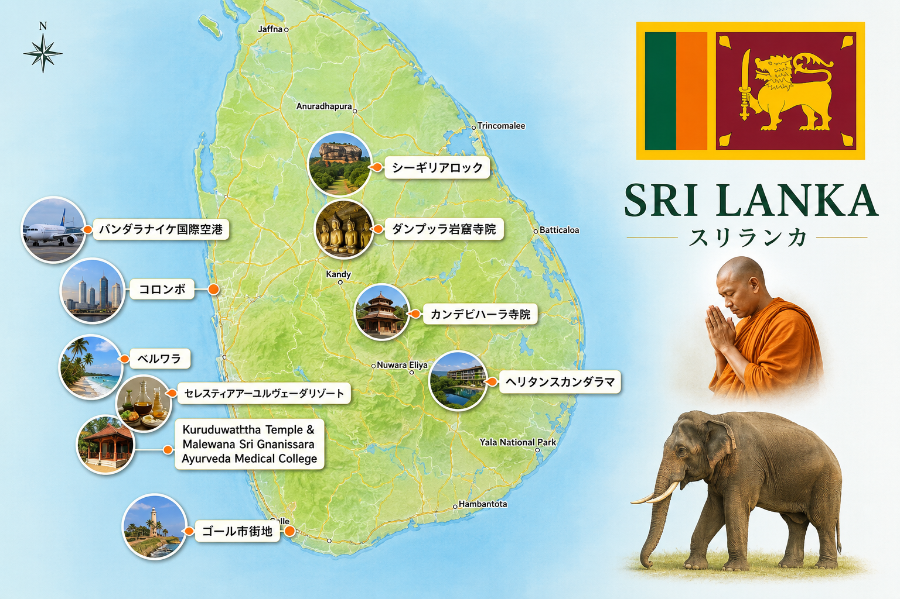
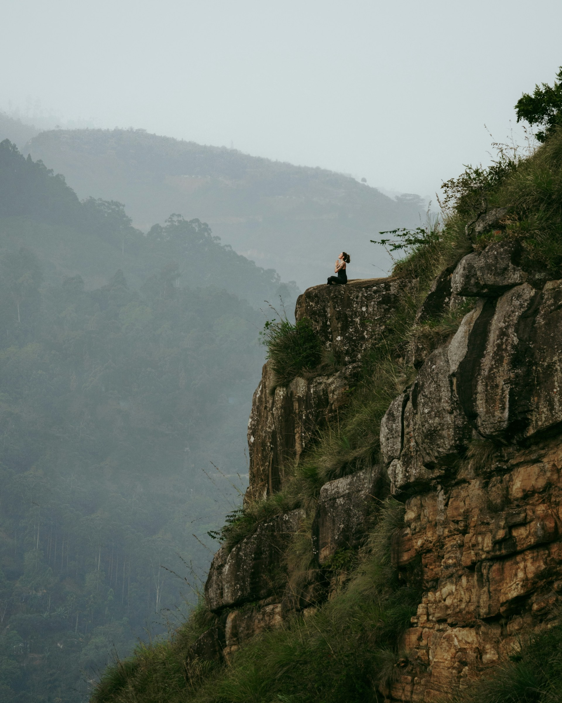
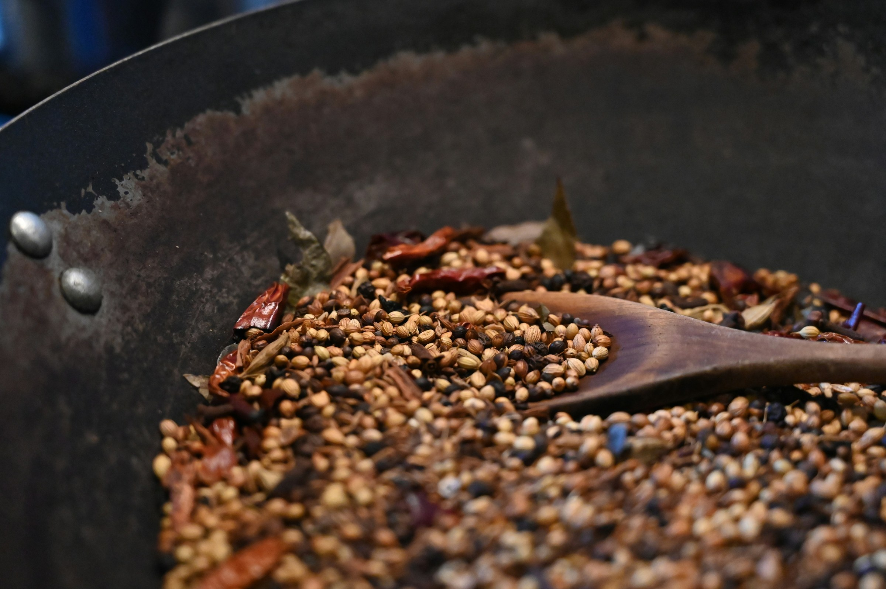
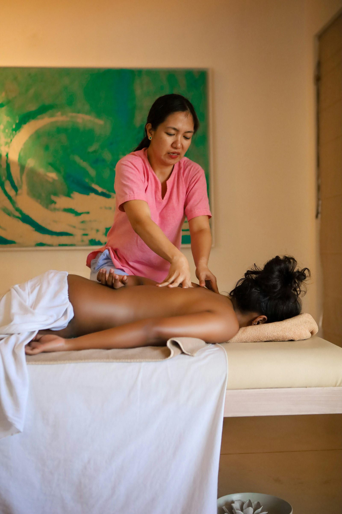
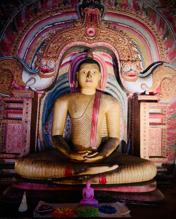
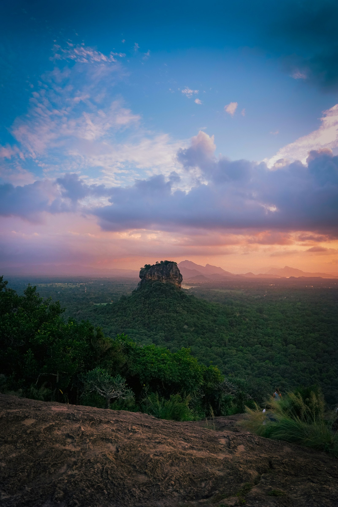
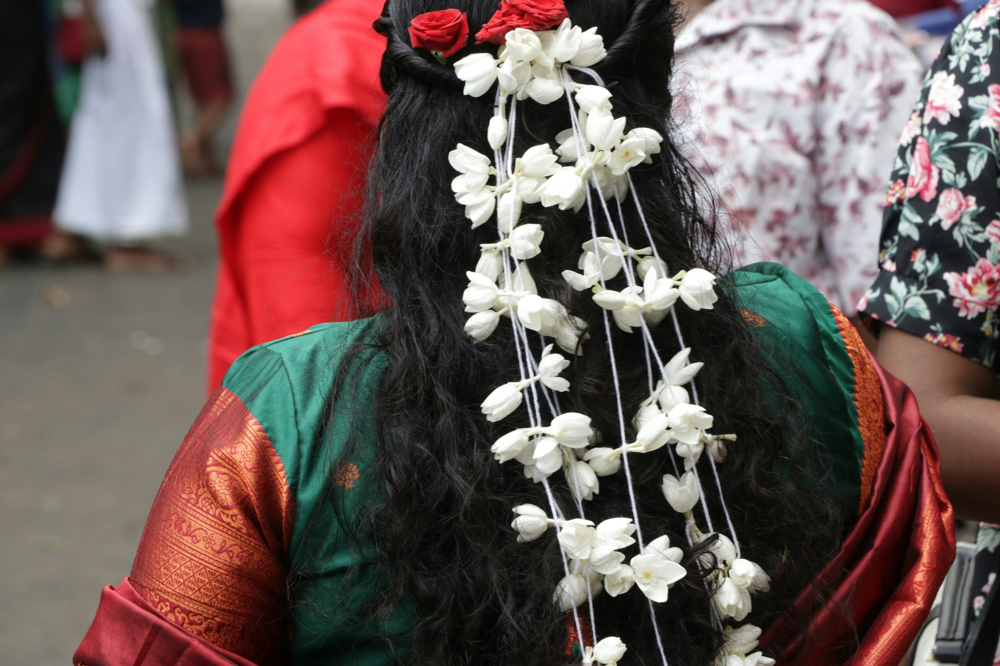
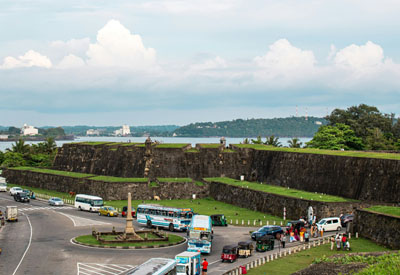
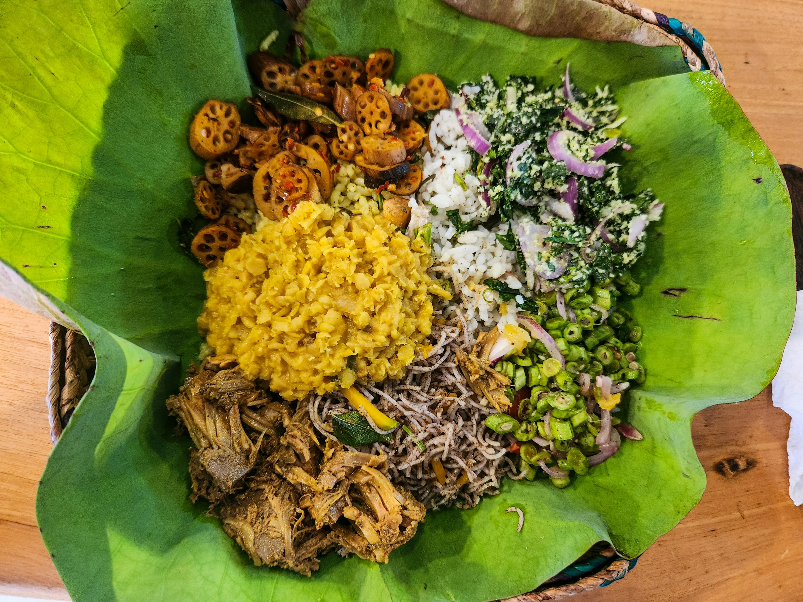

01
身体を整える
朝ヨガと、アーユルヴェーダ・ドクターの診断を踏まえた施術体験。
SRI LANKA RETREAT JOURNEY 2026
祈りの朝、薬草の香り、古代の岩山を渡る風。
身体を整え、歴史に触れ、感性をひらく。
観光だけでは終わらない、スリランカ7日間の特別な時間。
アーユルヴェーダ体験、ヨガ、仏教文化、占星術、世界遺産、ジェフリー・バワ建築、伝統料理。 ひとつずつが単発ではなく、「身体・知性・感性」を立体的に満たす流れとして設計された旅です。
40代〜70代女性、経営者、医療従事者、セラピスト、自然療法愛好家、ヨガ愛好家、 アーユルヴェーダや歴史・建築・文化体験を深く味わいたい方へ。
※先行案内登録は参加確約ではなく、費用も発生しません。旅行代金・募集人数・旅行条件は正式決定後にご案内します。
地図で全体像をつかむ前に、まずはこの旅の価値を5つの視点で整理しました。
何を体験できるのかが明確になると、申込判断がしやすくなります。
朝ヨガと、アーユルヴェーダ・ドクターの診断を踏まえた施術体験。
寺院参拝だけでなく、スリランカ仏教の背景と作法まで学べます。
ゴール、ダンブッラ、シーギリヤ。異なる時代の世界遺産を一度に巡ります。
ジェフリー・バワ建築、伝統料理、希望者向けサリー撮影まで体験。
ホロスコープ診断と静かな時間が、日常を選び直す視点をもたらします。
JOURNEY OVERVIEW MAP
この旅は、コロンボ到着から南西部のベルワラ周辺で心身を整え、 そこから仏教文化、海辺の世界遺産、アーユルヴェーダ、古代遺跡、建築、 そしてコロンボの都市文化へと、少しずつ景色を変えながら進んでいきます。
先に全体の位置関係をつかんでおくことで、 旅程表を読んだときに「いま、島のどこにいるのか」が直感的にわかり、 旅の流れをイメージしやすくなります。

THE CONCEPT
スリランカには、目に見える美しさの奥に、長い時間をかけて受け継がれてきた知恵があります。 仏教の祈り、植物と人を結ぶアーユルヴェーダ、星を読み解く占星術、土地の記憶を抱く世界遺産。
この旅で大切にするのは、「見ること」よりも「感じること」。 ヨガで呼吸を整え、ドクターとの対話から自分の状態を見つめ、聖地と自然の中で、 日常では聞こえにくかった内側の声に耳を澄ませます。
忙しさや役割をいったん置いて、自分の時間を生き直す。 その余白こそが、この旅の一番の目的です。


FIVE SIGNATURE EXPERIENCES
ウェルネスだけでも、観光だけでもない。スリランカという国を、祈り・自然・歴史・食・美意識のすべてから味わいます。

一人ひとりの状態を確認し、滞在中の施術内容を組み立てる、個別性を重視した体験。

寺院参拝、礼拝作法、仏教文化の講義を通して、観光写真だけでは見えない精神文化へ。

ゴール、ダンブッラ、シーギリヤ。時代の異なる三つの物語を一度の旅で。
スパイス、ココナッツ、野菜、ハーブ。食卓から土地の気候と暮らしを知る。

ホロスコープ診断と、希望者向けサリー撮影。旅の記憶を自分らしい一枚に。
THE ITINERARY
前半は仏教文化とアーユルヴェーダを深く体験し、後半は建築と世界遺産、コロンボの街へ。 心身への負担を考えながら、旅の高揚感が少しずつ増していく流れです。
DEPARTURE — NARITA TO COLOMBO
成田空港のチェックインカウンター前に集合し、コロンボのバンダラナイケ国際空港へ。 到着後は専用車でセレスティア・アーユルヴェーダ・リゾートへ移動します。 南国の空気に包まれながら、旅の最初の夜を静かに迎えます。
BUDDHIST CULTURE & GALLE
Kuruduwaththa Templeで朝のお参り。マレワナ・カレッジでは、 スリランカ仏教とインド仏教の違い、寺院参拝の作法、手首のお守りなど、 現地の暮らしに根づく仏教文化を学びます。ハーブ園、薬局、診療所を見学後、 カンデビハーラ寺院を参拝。夕方は世界遺産ゴール・フォートへ向かいます。
AYURVEDA RETREAT — DAY 1
朝のヨガで呼吸と身体の感覚を整えた後、アーユルヴェーダ・ドクターによる問診・状態確認へ。 その内容に基づき、個別の施術を受けます。予定を詰め込まず、 施術後の休息までを含めて自分の身体と向き合う一日です。
AYURVEDA RETREAT — DAY 2
二日目は終日、ヨガとアーユルヴェーダを中心に過ごします。 薬草の香り、オイルの温度、ゆっくりとした呼吸。 日常では後回しにしがちな「自分をいたわる時間」を、何もしない贅沢とともに味わいます。
DAMBULLA · BAWA · SIGIRIYA
早朝に出発し、世界遺産ダンブッラ石窟寺院を拝観。 昼はジェフリー・バワ設計のヘリタンス・カンダラマでランチを楽しみます。 建築と森が溶け合う空間を体験した後、世界遺産シーギリヤ・ロックへ。 登頂後はコロンボへ移動し、ホテルにチェックインします。
COLOMBO & HOROSCOPE
ホロスコープによる占星術診断を体験し、コロンボと周辺を観光。 ショッピングの時間も設けます。希望者はスタジオで、 女性はサリー、男性はサロンをまとって撮影。 夜は参加者全員で旅の余韻を分かち合うディナーへ。
FAREWELL TO SRI LANKA
コロンボ観光と全員集合ランチを楽しみ、空港へ。 20時頃にスリランカを出発し、機内泊。 11月1日早朝、成田空港到着後に解散します。 帰国後の景色が少し違って見えることも、この旅の一部です。
AYURVEDA
アーユルヴェーダは、画一的なリラクゼーションではありません。 ドクターとの対話を通して、その時の身体と生活の状態を確認し、個別の施術へつなげます。
何かを足す前に、今の自分が何を必要としているのかを知る。 その静かな問いかけから、リトリートは始まります。
THREE UNESCO STORIES
王国の野望、信仰の祈り、海洋交易の歴史。同じ島に残された、まったく異なる三つの時間を旅します。
熱帯の森から突き上がる巨大な岩山。古代王国の痕跡と広大な景観が、 登るほどにひとつの物語として立ち上がります。
岩山の洞窟に広がる仏像と壁画。薄暗い空間に差し込む光の中で、 長く受け継がれてきた信仰の密度を感じます。

海風が抜ける城壁、石畳、コロニアル建築。アジアとヨーロッパが交差した港町を、 夕暮れの光とともに歩きます。

GEOFFREY BAWA
ジェフリー・バワの建築は、森や水、風景を排除せず、建築の一部として迎え入れます。 ヘリタンス・カンダラマでは、建物が緑に抱かれるような空間を体験し、ホテルでランチを楽しみます。
窓の外に自然があるのではなく、自然の中に建築がある。 食事の時間までが、ひとつの美しい空間体験になります。
HOROSCOPE READING
スリランカの暮らしや人生観とも深く結びついてきた占星術。 未来を断定するものとしてではなく、自分の傾向や選択を見つめ直す対話の時間として体験します。
SAREE PORTRAIT
希望者はスタジオで、女性はサリー、男性はサロンを着用して撮影。 色や布の重なりを楽しみながら、普段とは違う自分の表情を残します。
WHAT YOU MAY TAKE HOME
体験による感じ方には個人差があります。この旅が目指すのは、変化を保証することではなく、 自分の身体・時間・価値観を見直すための、深いきっかけをつくることです。
忙しさの中で見落としていた疲れや呼吸、休息の必要性を感じ取るきっかけに。
経営者、医療者、家族を支える人としての役割を一度置き、自分自身に戻る。
仏教、医療、食、建築を断片ではなく、土地の歴史と暮らしの連続として理解する。
帰国後の食事、休み方、仕事との距離に、小さくても具体的な選択肢が生まれる。
FOR WHOM
年齢や職業よりも、「観光だけではなく、土地の知恵に触れたい」という気持ちを大切にしています。
BE FIRST TO KNOW
興味はあるけれど、旅行代金や募集条件が決まるまで判断できない。 その段階で無理に申込相談へ進む必要はありません。 先行案内に登録すると、正式募集に必要な情報が整った時点でご案内します。
参加の確約ではありません。情報を確認してから、正式に申し込むか判断できます。
FREQUENTLY ASKED QUESTIONS
成約率を下げる原因は、興味がないことではなく、 「少し気になることが残ったまま」になっているケースです。 とくにこのツアーでは、一人参加、体力面、初めてのアーユルヴェーダなどが 申込前の主な不安になりやすいため、先回りして回答をまとめています。
ここで解消しきれない内容は、下部フォームから個別にご相談いただけます。
THE JOURNEY IS CALLING
人生を大きく変えると宣言しなくてもいい。
ただ一週間、いつもの場所から離れ、自分の感覚を取り戻す。
スリランカの祈りと緑、古代の風景が、その静かな決断を待っています。
先行案内登録は参加確約ではありません。料金・募集人数・旅行条件を確認後に、正式申込をご判断ください。
CONTACT & APPLICATION
先行案内だけでは解消できない、体力面、健康状態、食事、アーユルヴェーダ体験、宿泊、撮影オプションなどを個別にご相談いただけます。